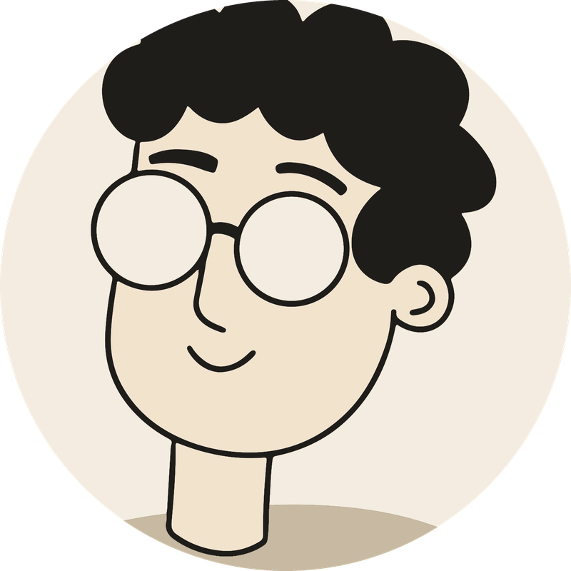

실력도, 쌓아온 경험도
다릅니다.
하지만 밖에서 보면 모두
비슷합니다.
차이를 만드는 결정적 근거,
지금 갖고 있습니까?
같은 사실도 책에 담기면
무게감이 다릅니다.
경험과 지식을 책 한 권에
담으십시오.
소중한 경험과 지식을
들려주세요
인터뷰 종류 후 10일이면
초고가 완성됩니다
담당 편집자가 인터뷰 후
AI로 정리하고,
다시 전문 편집자가
다듬습니다.
흩어진 지식과 경험이 모이면,
원천 콘텐츠가 되고 더 많은
일을 손쉽게 할 수 있습니다.
| 형태 | 활용 |
|---|---|
| 책 | 프로필에 남기고, 신뢰의 근거가 됩니다 |
| 칼럼·블로그 | 칼럼 기고문, 블로그 게시글로 활용합니다 |
| 유튜브 대본 | 이미 정리된 내용이라 촬영만 하면 됩니다 |
| 강연 자료 | 목차가 곧 강연 커리큘럼입니다 |
| 설명 자료 | 힘들게 말로 하던 것을 책이 대신 합니다 |
인터뷰는 전문 편집자가,
정리는 AI가, 다시 전문
편집자가 다듬습니다.
AI는 단지 거들 뿐,
전문가의 눈과 손길이 원고의
질을 결정합니다.
| 저자가 직접 쓴 원고 | 0매 |
| 상담 | 30분 |
| 인터뷰 | 2~3회 · 4~8시간 |
| 원고 검토 | 2~3시간 |
| 저자 총 투입 | 약 10시간 |
혼자 쓰면 6개월 넘게
걸립니다.
10시간만 투자하십시오.
숙련된 편집자가 원고의 질을
높입니다.
이야기를 들려주고, 집필원고
확인하기
설문조사 후 상담 30분.
콘셉트를 설계하고 목차
기획안을 만듭니다.
4~8시간 인터뷰를 2~3회로
나누어 진행합니다. 화상 또는
방문 중 고르실 수 있고,
저녁이나 주말도 가능합니다.
인터뷰 완료 후 초고 완성까지
10일. 최종적인 검토는
저자가 직접 하셔야 합니다.
편집·교열 및
디자인(본문·표지)을 거쳐
도서 제작을 진행합니다. 제작
완료 후 온라인 서점에 등록해
드립니다.
* 전체 일정은 4~8주입니다. 인터뷰 간격과 저자감수 기간에 따라 달라집니다. 책이 필요한 시점이 정해져 있다면 먼저 말씀해 주십시오. 역산해서 계획을 세워 드립니다.

“AI가 초고를 만들어도,
책의 진정한 가치는 윤문과
편집이 결정합니다.”
상담 후 책임편집자 1인이
배정됩니다.
책 출간까지 한 사람이
책임집니다.
| 실속형 | 표준형 | 프리미엄형 | |
|---|---|---|---|
| 가격 | 450만 원 | 680만 원 | 870만 원 |
| 상담 | 설문지 작성 후 30분 | 설문지 작성 후 30분 | 설문지 작성 후 30분 |
| 목차 | 1회 수정 | 2회 수정 | 2회 수정 |
| 인터뷰 | 셀프 인터뷰 녹음 4~5시간 | 편집자 화상 인터뷰 5~6시간 | 편집자 방문 6~8시간 |
| 편집 | 윤문 1회 | 윤문 2회 | 윤문 2회 |
| 표지·내지 | 검증된 템플릿 | 내지 템플릿 / 표지 맞춤 디자인 | 맞춤 디자인 |
| 전자책 등록 | — | 포함 | 포함 |
| 칼럼 초안 | — | 10편 | 10편 |
| 영상 주제 리스트 | — | — | 10개 |
| 서점 소개자료 | — | 포함 | 포함 |
| 서점 유통 | — | — | 포함 |
| 초판 옵셋 인쇄 | — | 500부 이상 별도 협의 | 500부 이상 별도 협의 |
배포 계획에 따라 인쇄 부수를
늘릴 수 있습니다.
담당 편집자가 끝까지 제작
관리를 책임집니다.
계약 시 70%, 디자인 완료
시 30%.
세금계산서 발행도 가능합니다.
됩니다. 내용은 저자의 지식과
경험이고, 저희는 그것을 글의
형태로 정리하는 역할을
합니다. 저작권은 전적으로
저자에게 귀속되며 계약서에
명시합니다. 저자와 편집자의
협업은 출판에서 오래된
방식입니다.
“편집자와 함께 작업했다”고
답하시면 됩니다. 사실이고,
출판에서 일반적인 방식입니다.
필요하시면 예상 질문과 답변을
정리해 함께 드립니다.
사전 동의 없이는 쓰지
않습니다. 동의하신 경우에도
범위를 두 단계 중에서 고르실
수 있습니다. 표지와 저자명
전부 공개, 표지만
공개입니다. 반대로 적극적으로
알리고 싶으신 경우에도 저희는
저자의 선택을 따릅니다.
보도자료 문안이나 소개 자료를
함께 준비해 드립니다.
분야마다 표현에 제약이 있다는
것을 전제로 작업합니다.
의료는 의료광고 규정, 법조는
변호사 광고 규정, 공직
관련은 선거법이 각각 다르게
적용됩니다. 원고 단계에서
해당 기준에 맞는 표현
가이드라인을 적용하고, 판단이
필요한 부분은 미리 상의
드립니다. 다만 최종 판단과
책임은 저자에게 있습니다.
일정을 먼저 말씀해 주시면
역산해서 계획을 세웁니다.
다만 ISBN 발급과 서점
입점은 저희가 통제할 수 없는
구간이므로, 여유를 두고
시작하시는 것이 안전합니다.
특히 법령상 특정 시점 이후에
제약이 생기는 경우라면
상담에서 함께 확인하겠습니다.
저희가 1차 사실 확인을
하고, 최종 확인은 반드시
저자가 하십니다. 이 과정
없이 출간하지 않습니다. 전문
영역의 판단은 저자의 몫이며,
저희는 그 판단이 정확한지
확인 작업을 돕습니다.
들어갑니다. ISBN을
발급받아 주요 온라인 서점에
전자책을 등록합니다. 선택하신
요금제 중 프리미엄형만
종이책으로 대량 제작하여
오프라인 서점에 유통
가능합니다. 다만 비매품으로만
제작하는 것도 가능합니다.